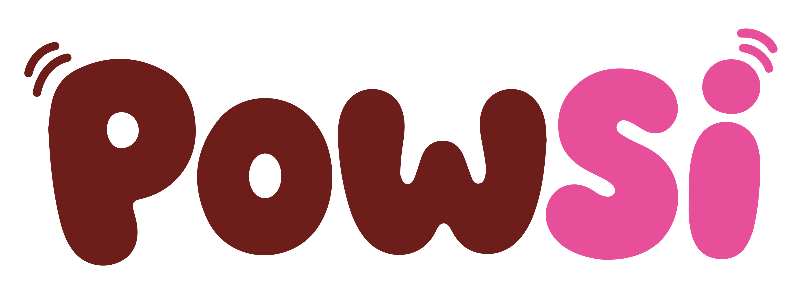

POWSI · Veterinaria
Informe de decisión técnica
Vertical slice · preparación segura para Supabase Cloud
Decisión técnica aplicada
Se preparó una base segura para que POWSI integre el cliente de Supabase sin convertir la configuración local en un secreto publicado ni inicializar el cliente con parámetros incompletos.
Mejora aplicada y probada localmente
Sin conexión ni cambios en Cloud
11 de noviembre de 2026
01
Contexto real de POWSI
POWSI es una aplicación React 19 + Vite. Hoy gestiona perfiles de mascotas y la última solicitud de cita en el navegador; el historial y las vacunas del panel son demostrativos. La preparación de Supabase instala CLI y SDK, crea la configuración local y centraliza el cliente, pero la cuenta CLI todavía no está autenticada y no se vinculó un proyecto Cloud.
Implementado
Perfiles locales, módulo cliente preparado con variables y compilación Vite.
Simulado
Confirmación de cita en pantalla y datos clínicos estáticos del tablero.
Pendiente
Login, proyecto Cloud, base de datos, RLS y aislamiento por dueño/veterinario.
El modelo de referencia separa cuenta del dueño, perfil de mascota, veterinario asignado opcional y notas por perfil; es una propuesta, aún no implementada ni protegida por RLS.
02
Riesgo inicial y decisión
Riesgo que se corrige en esta vertical slice
Una variable local con nombre VITE_* puede terminar en el bundle público. Además, si falta la URL o la clave, una inicialización sin guardia podría fallar de manera poco clara o dejar el cliente mal configurado. Una clave privada, como service_role, nunca debe exponerse en React.
Decisión aplicada
Se permite en el navegador únicamente la publishable key; los archivos de entorno reales se excluyen de Git, se ofrece una plantilla sin secretos y el módulo central falla explícitamente si falta alguna variable requerida. Esto protege configuración, no sustituye autenticación, permisos ni RLS.
Alcance de seguridad
La regla de autorización para el futuro deberá comprobar en servidor que la cuenta es dueña del perfil o veterinaria asignada, y qué operación puede ejecutar sobre cada nota. No se declaran políticas RLS aplicadas: todavía no hay esquema remoto.
03
Qué se implementó
El cambio es acotado a la configuración; no altera los formularios ni incorpora operaciones de negocio.
Guardia del cliente
const url = import.meta.env.VITE_SUPABASE_URL
const key = import.meta.env.VITE_SUPABASE_PUBLISHABLE_KEY
if (!url || !key) {
throw new Error(
'Missing Supabase configuration...'
)
}
export const supabase = createClient(url, key)
La condición se comprueba antes de construir el cliente; el error indica qué configuración falta y dónde definirla.
Protección y plantilla
.env
.env.*
!.env.example
.env.example contiene nombres y valores ilustrativos, no claves reales. Los secretos del servidor no deben llevar prefijo VITE_.
04
Pruebas ejecutadas
| Caso | Esperado | Observado | Resultado |
|---|
| URL y clave ausentes; carga del módulo en SSR Vite. |
Rechazar la configuración incompleta con error explícito. |
Missing Supabase configuration; no se inicializó el cliente. |
APROBADO |
| URL y publishable key ficticias en variables del proceso. |
Crear el cliente sin enviar solicitudes de red. |
Cliente inicializado; la prueba verificó sus métodos. No se conectó a Cloud. |
APROBADO |
Protección de .env.local y disponibilidad de la plantilla. |
Ignorar el archivo real; mantener versionable .env.example. |
git check-ignore -v confirmó la regla para .env.local; la plantilla no está ignorada. |
APROBADO |
npm run build. |
Conservar el build de la aplicación. |
Build Vite completado correctamente; 29 módulos transformados. |
APROBADO |
supabase projects list. |
Requiere sesión válida para consultar proyectos. |
AccessTokenRequiredError; no hay sesión de CLI. |
PENDIENTE |
Reproducibilidad: la inicialización de prueba usó https://test-project.supabase.co y sb_publishable_test_placeholder como variables temporales de proceso; no se escribieron en archivos y no se enviaron solicitudes. CLI Supabase verificada: 3.1.0.
05
Archivos relacionados
src/lib/supabase.js — cliente y guardia..gitignore — exclusión de archivos de entorno..env.example — plantilla pública.package.json — CLI y SDK Supabase.supabase/config.toml — configuración inicial local.SUPABASE_SETUP.md — pasos pendientes y comandos.
06
Resultado y límites
Resultado alcanzado
Configuración lista para comenzar
El SDK está centralizado y el proyecto compila. La ausencia de configuración se detecta antes de usar el cliente y los archivos de entorno locales no se incorporan a Git.
Límite explícito
Aún no es integración Cloud
La CLI no tiene sesión, no se eligió ni vinculó proyecto y no existe .env.local con valores reales. No se crearon tablas, políticas RLS ni cuentas de usuario.
Qué protege y qué no protege esta decisión
Sí: evita inicialización con variables ausentes y reduce la posibilidad de versionar archivos de entorno locales. No: valida permisos sobre perfiles/notas, evita que una publishable key sea visible (es pública por diseño), ni demuestra autorización de dueño o veterinario. Las reglas de RLS serán indispensables cuando existan tablas.
07
Próximos pasos seguros
- Autenticar la CLI localmente con
npx supabase login; no compartir el token.
- Elegir el proyecto Cloud correcto y vincularlo con
npx supabase link --project-ref.
- Guardar URL y publishable key solo en
.env.local.
- Diseñar tablas y RLS antes de guardar perfiles o notas reales.
- Aplicar autorización por dueño y veterinario asignado en cada lectura y escritura.
La propuesta de datos separa notas del perfil y asocia cada nota a una mascota. Antes de crear las políticas hay que decidir si el veterinario asignado solo consulta o también edita, quién puede borrar y cómo se revoca el acceso al cambiar la asignación.
08
Caso límite propuesto
Revocación del veterinario con una sesión previa abierta
Si un veterinario estaba asignado a una mascota, consulta una nota y luego el dueño o una cuenta autorizada retira esa asignación, ¿puede el veterinario seguir leyendo o modificando la nota usando una página abierta, una petición repetida o un identificador de perfil conocido?
Respuesta esperada
El servidor debe volver a comprobar la identidad, asignación vigente y permiso concreto en cada solicitud. Tras la revocación, lectura y edición deben denegarse incluso si el cliente conserva datos en memoria; invalidar o evitar cachés sensibles y registrar el cambio. La prueba debe verificar tanto el rechazo como la ausencia de contenido de la nota en la respuesta.
Conclusión: POWSI cuenta con una mejora verificable de protección de configuración y manejo de error. El siguiente hito de seguridad no es ocultar controles en React: es vincular el dueño al perfil y hacer cumplir en el servidor las políticas de acceso a notas, con RLS probada para ambos roles.